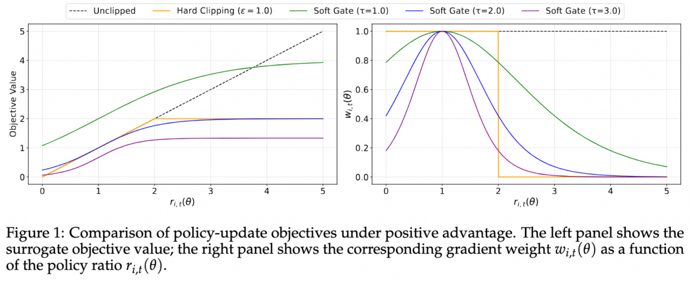

Soft Adaptive Policy Optimization (SAPO)
版本依赖：ms-swift>=3.11
Soft Adaptive Policy Optimization (SAPO) 针对 GRPO 中硬裁剪（hard clipping）带来的问题，提出了一种基于温度控制的软门控（soft gate）机制，用于平滑地衰减离策略更新，同时保留有用的学习信号。
背景与动机
在强化学习训练 LLM 时，GRPO 通过计算 token 级别的重要性采样比（Importance Sampling Ratio）来处理 off-policy 训练：
$$ r_t = \frac{\pi_\theta(y_t|x, y_{<t})}{\pi_{\theta_{\mathrm{old}}}(y_t|x, y_{<t})} $$
然而，token 级别的重要性采样比往往表现出高方差，这一现象在以下情况下可能更严重：
长文本生成
MoE 模型的路由异质性：采样时的 old-policy 模型与训练模型可能使用不同的专家路由，导致 logps 差异显著放大
为此，GRPO 通过硬裁剪来限制策略更新的幅度：
$$ L^{\mathrm{GRPO}} = -\min\left( r_t \cdot A, \mathrm{clip}(r_t, 1-\epsilon, 1+\epsilon) \cdot A \right) $$
硬裁剪的困境：硬裁剪难以在稳定性和学习效率之间取得平衡——裁剪范围过严格会限制有效样本的数量，而过宽松则会引入离策略样本的噪声梯度，导致训练不稳定。
SAPO 方法
SAPO 使用温度控制的 sigmoid 软门控函数替代硬裁剪，实现平滑的梯度衰减。
软门控函数
SAPO 的核心是使用 sigmoid 函数对重要性采样比进行软门控：
对于正向优势（$A > 0$），使用正向门控：
$$ g^{+}t = \sigma\left( \tau{\mathrm{pos}} \cdot (r_t - 1) \right) \cdot \frac{4}{\tau_{\mathrm{pos}}} $$
对于负向优势（$A < 0$），使用负向门控：
$$ g^{-}t = \sigma\left( \tau{\mathrm{neg}} \cdot (r_t - 1) \right) \cdot \frac{4}{\tau_{\mathrm{neg}}} $$
其中：
$\sigma(\cdot)$ 是 sigmoid 函数
$\tau_{\mathrm{pos}}$ 和 $\tau_{\mathrm{neg}}$ 是温度参数，控制门控函数的斜率
$r_t$ 是重要性采样比
SAPO 损失函数
$$ L^{\mathrm{SAPO}} = -g_t \cdot A $$
其中 $g_t = g^{+}_t$ 当 $A > 0$，$g_t = g^{-}_t$ 当 $A < 0$。
温度参数
温度参数 $\tau$ 控制软门控函数的衰减速率，数值越大，衰减越快。

论文指出正向优势会提升采样token的logit，并降低所有未采样token的logit；负向优势相反，提高许多未采样token的logit，可能会扩散到大量无关token上，带来一定的不稳定性。所以论文推荐设置温度 $\tau_\text{neg} > \tau_\text{pos}$，来使负向奖励的token梯度衰减更快，提升训练的稳定性和性能。
论文默认推荐 $\tau_{\mathrm{pos}} = 1.0$，$\tau_{\mathrm{neg}} = 1.05$。
参数设置
| 参数 | 类型 | 默认值 | 说明 |
|---|---|---|---|
--loss_type |
str |
- | 设置为 sapo |
--tau_pos |
float |
1.0 |
正向优势的温度参数，控制门控斜率 |
--tau_neg |
float |
1.05 |
负向优势的温度参数，控制门控斜率 |
swift rlhf \
--rlhf_type grpo \
--loss_type sapo \
--tau_pos 1.0 \
--tau_neg 1.05 \
# ... 其他参数
训练脚本参考
SAPO 的软门控机制仅在 off-policy 训练下生效。 SAPO 中的重要性采样粒度为 token 级别（即 importance_sampling_level 默认设置为 token），与 GSPO 冲突。